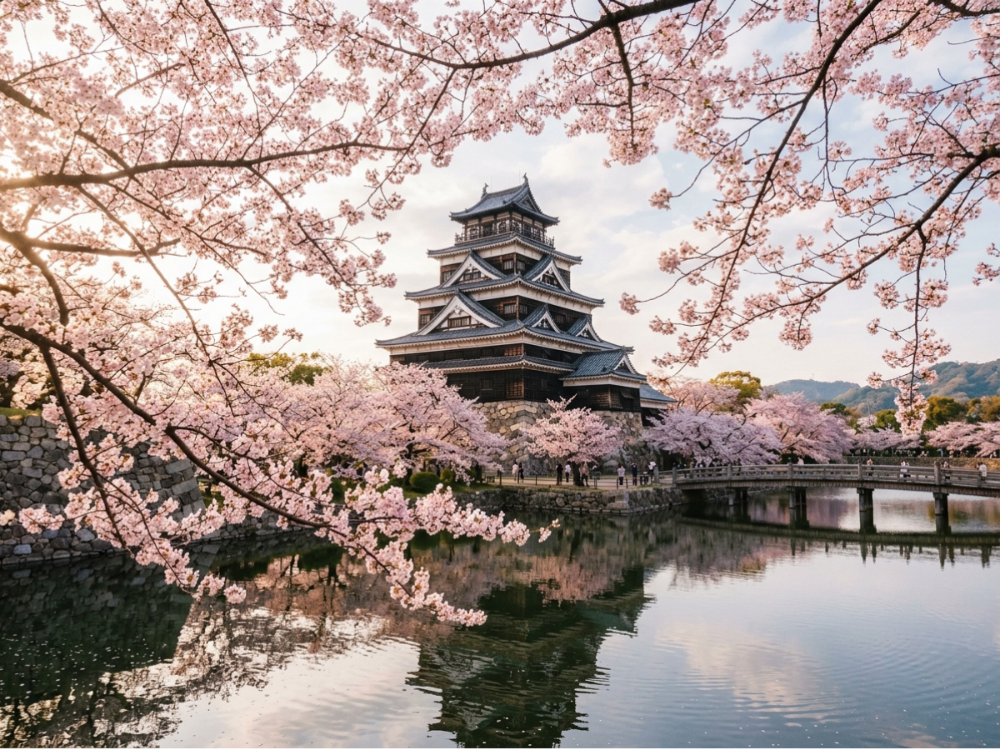
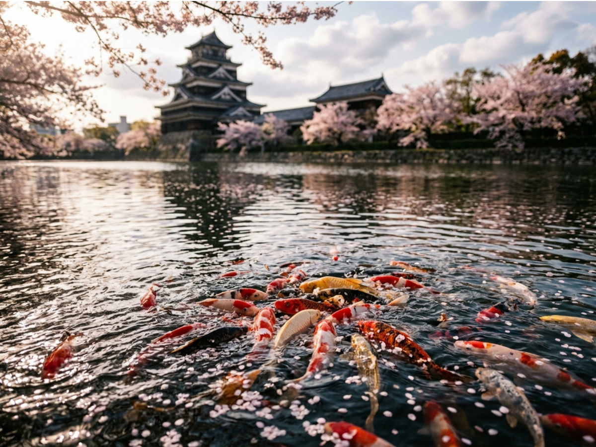

Last time, we stood beneath Osaka Castle.
Stone walls.
Cherry blossoms.
And a moat that quietly disappeared from history.
It wasn’t destroyed.
It was removed.
This time, we are looking at a different castle.
A place where the moat still remains.
And what lives in that water
might tell you more than the walls ever could.

A spring view that feels peaceful — but carries a different name.
A Castle Adorned with Flowers — Yet Called Fish
In spring, this castle looks gentle.
Cherry blossoms soften the stone.
Dark roof tiles catch the light.
It feels quiet.
Almost delicate.
But for over 400 years,
people have called it something else.
Carp Castle.
At first, it sounds obvious.
Until you realize
that the name and the image
never quite match.
What You See in the Water
If you lean over the moat today,
you will see them immediately.
Carp.
Dozens.
Sometimes hundreds.
They move slowly
beneath the green surface.
So the name makes sense.
Of course it does.
Until you look at the timeline.

What you see now feels natural — but it wasn’t always there.
The Name Came First
The nickname “Carp Castle”
existed long before
these fish were here.
Centuries before.
The carp did not create the name.
They grew into it.
Which leaves a quieter question.
Why did people call it that
in the first place?
Three Theories, No Answer
Historians offer explanations.
None are final.
Only possibilities.
One says the land once had a similar sound.
A name reshaped into something more fortunate.
Another imagines the delta from above.
Water and sand forming
something like a swimming carp.
And the simplest one:
People saw fish.
They named what they saw.
History can be that quiet.
What I Chose Not to Show
In the poster,
there are no fish.
Only blossoms.
And stone.
That was intentional.
Because most people,
when they first arrive here,
see spring.
Not the name.
Not the history beneath it.
Just the surface.
The image we bring into our space often reflects only the surface.
The Gap That Matters
This series is not about what is visible.
It is about the distance
between what we see
and what is actually there.
The carp are not in the image.
They are in the name.
In the water.
Just outside the frame.
From Osaka to Here
Osaka Castle lost its moat.
This castle kept it.
The water remained.
And eventually,
so did the fish.
But not for the reason
you might expect.
What Comes Next
The carp you see today
are not ancient.
They were placed there.
Deliberately.
After something
that almost erased the city itself.
They are not decoration.
They are a message.